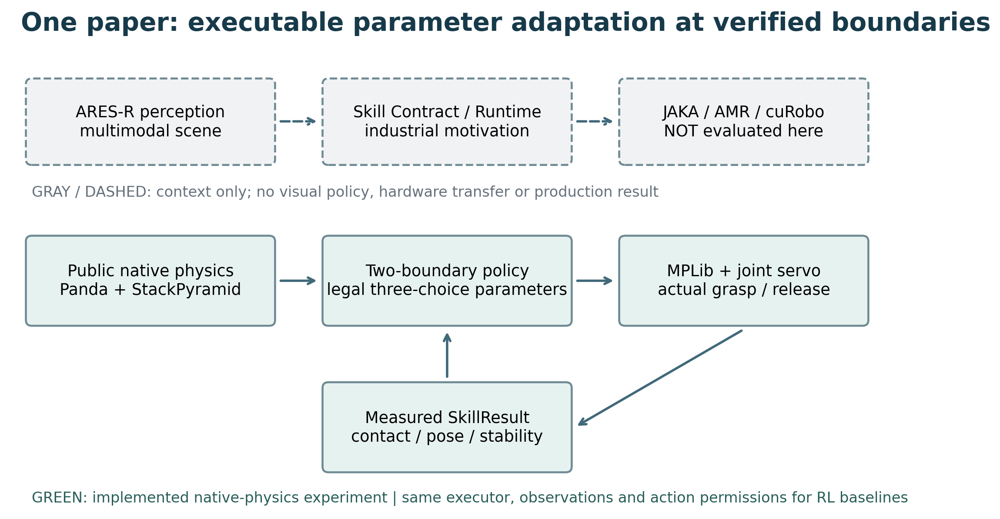
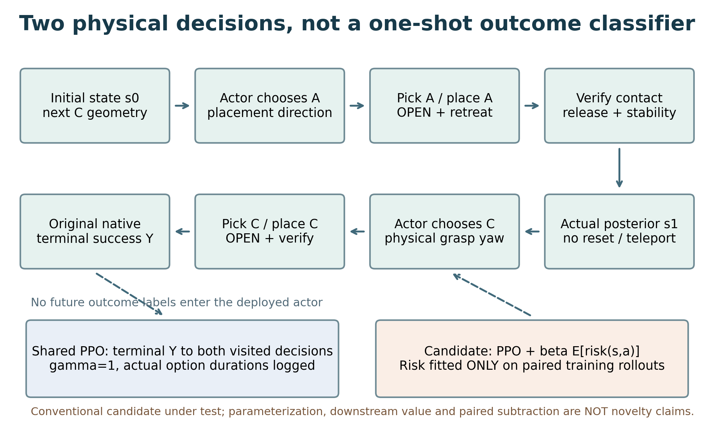
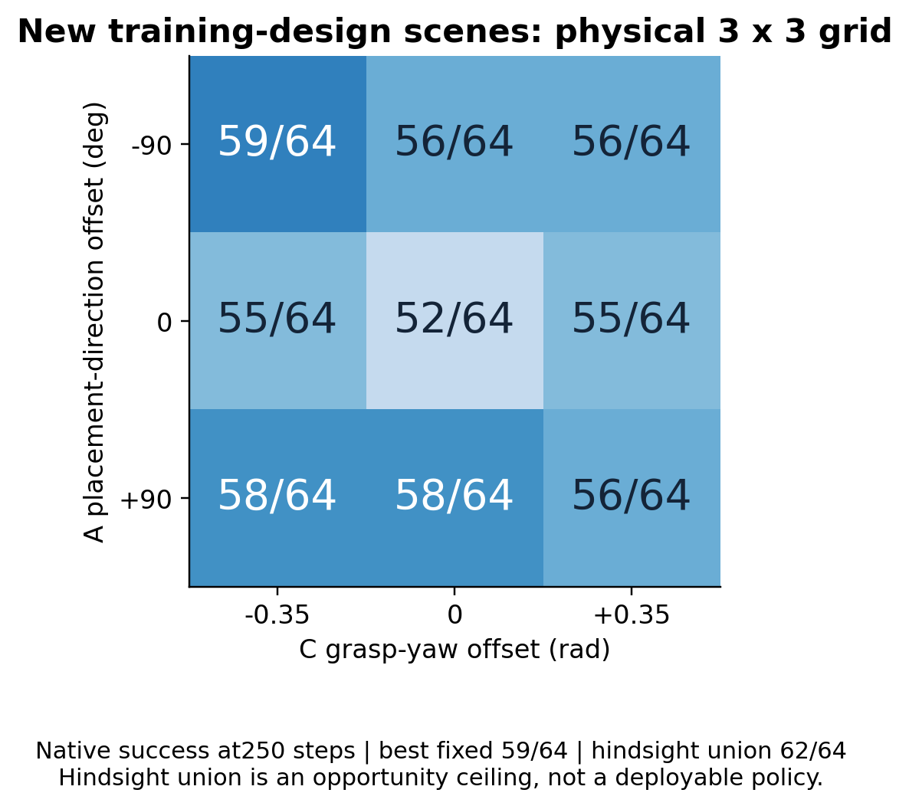
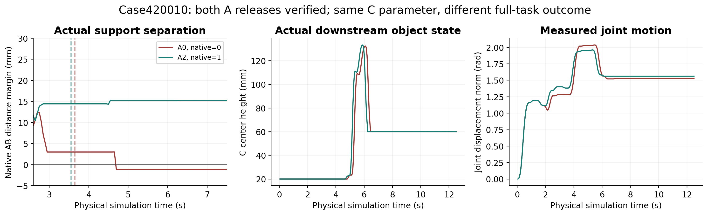
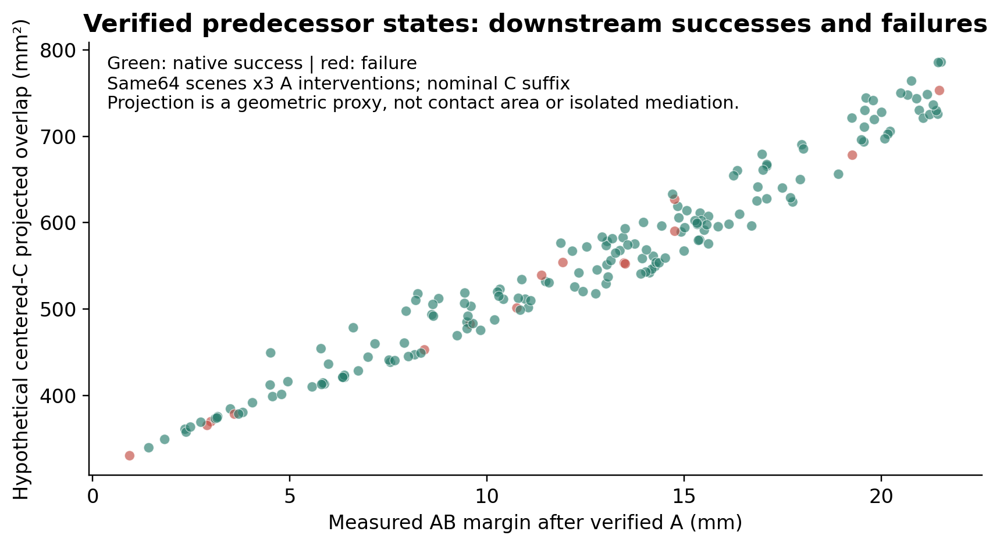
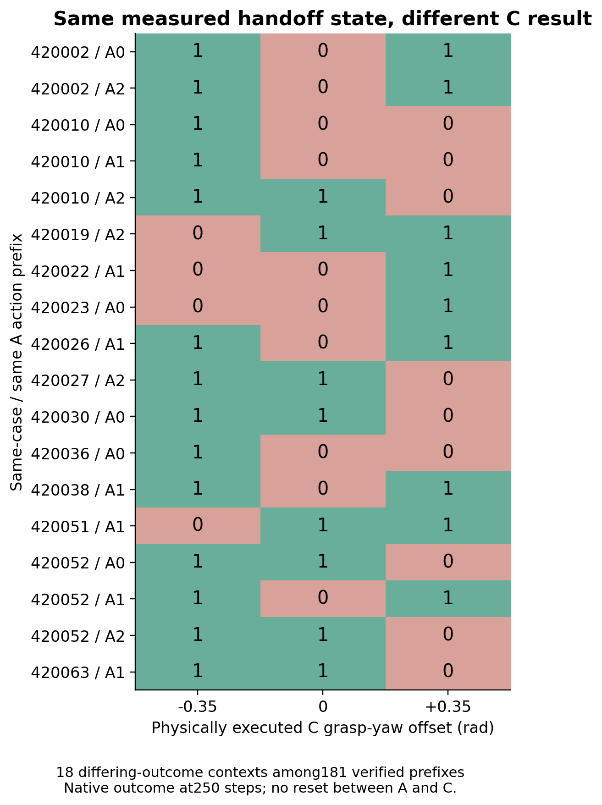
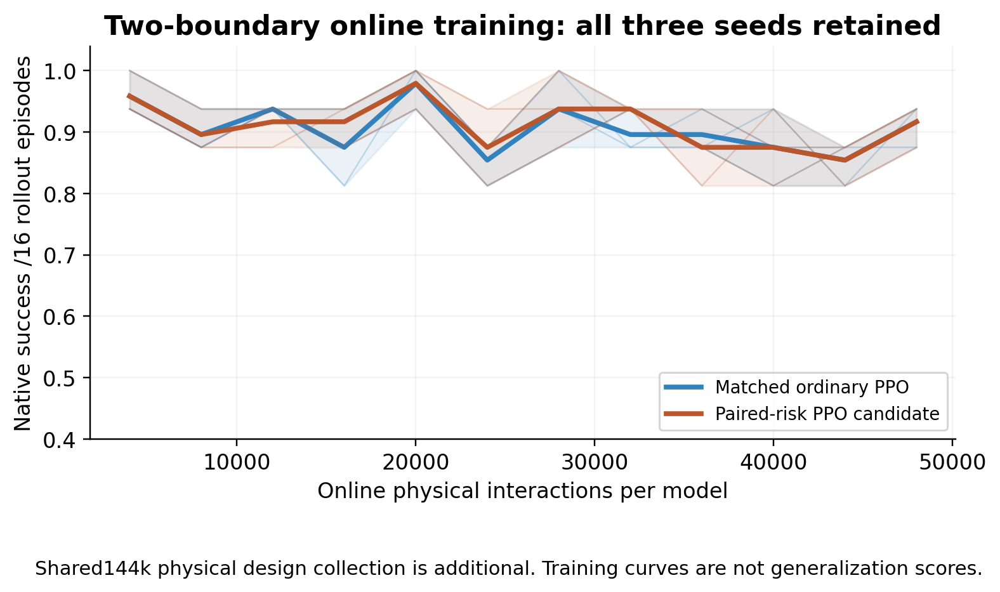
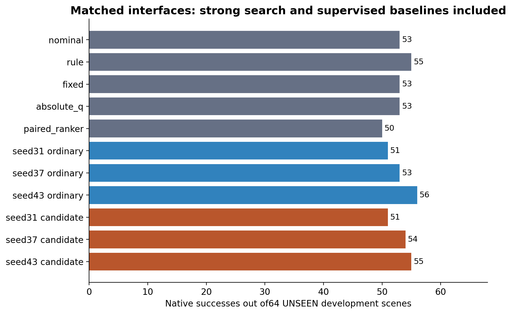
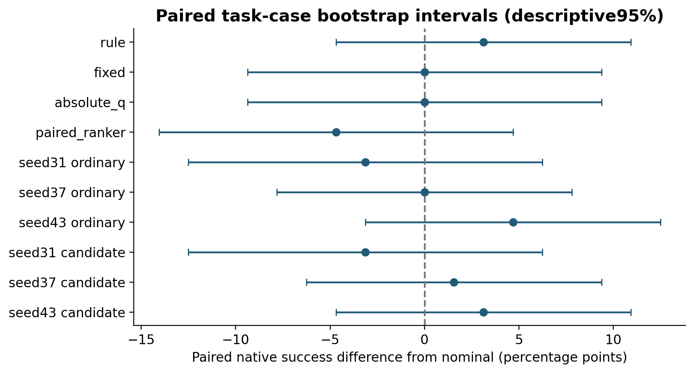
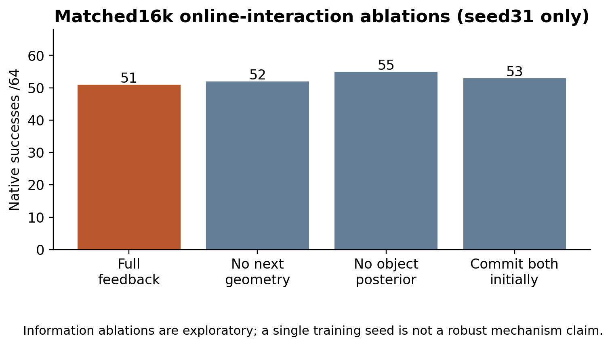

前段均已松爪稳定：不同支撑状态影响同一后缀
Case 420010 · A0_C1 / A2_C1
Original recorded physical states; graphics-only replay. Max state readback error 1.2e-07. Selected qualitative example, not an extra statistical sample.
公开Panda / 原生StackPyramid-v1；不是实机。普通PPO三种子51/53/56，候选51/54/55；平均差0。当前风险正则没有可靠独立增益。以下保留救回与退化，不用成功影片替代统计。
原始录像大文件保留在非Git运行目录；本机可直接播放。跨机器需携带visuals目录，或用公开的SELECTED_ORIGINAL_STATES.json.gz重新渲染。影片使用保存的真实关节/物体状态，不生成理想化TCP路径，不产生新实验结果。
Case 420010 · A0_C1 / A2_C1
Original recorded physical states; graphics-only replay. Max state readback error 1.2e-07. Selected qualitative example, not an extra statistical sample.
Case 420002 · A0_C0 / A0_C1
Original recorded physical states; graphics-only replay. Max state readback error 1.2e-07. Selected qualitative example, not an extra statistical sample.
Case 520005 · ppo_s37_b0_full / ppo_s37_b2_full
Original recorded physical states; graphics-only replay. Max state readback error 1.2e-07. Selected qualitative example, not an extra statistical sample.
Case 520001 · ppo_s43_b0_full / ppo_s43_b2_full
Original recorded physical states; graphics-only replay. Max state readback error 1.2e-07. Selected qualitative example, not an extra statistical sample.
中文研究判断 · 英文论文工作稿 · 所有方法/种子结果 · 逐案例救回与退化 · 真实交互成本









